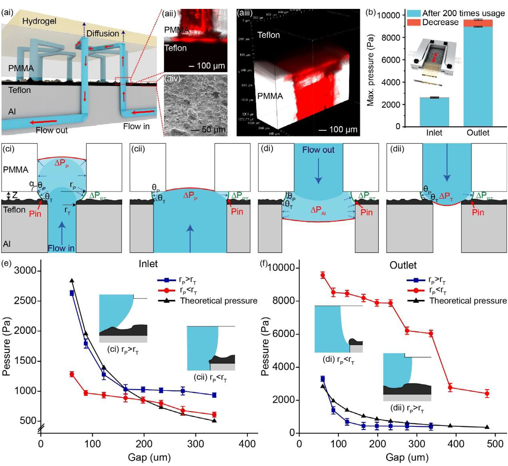
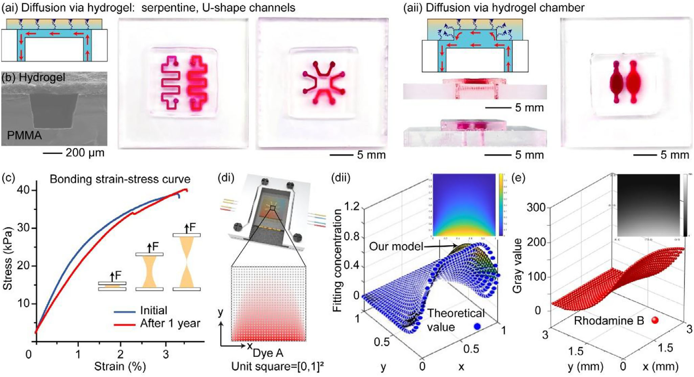

研究院研发 / 微流控设备
微流控设备集成
与程控显微
迭代培养设备与成像平台，
实现图像驱动 MIC 边界搜索。

研发任务
开发水凝胶芯片药敏实验的配套设备，衔接培养温控、芯片装载、显微采集与图像分析。
承担工作
承担外围培养设备、标准化卡托与显微成像联动研发，独立实现图像预处理、自动对焦与 MIC 边界搜索程序。
- 培养设备与标准化卡托设计迭代、样机组装、加工对接与测试。
- 显微成像联动集成成像与平台运动，衔接采集和分析程序。
- 图像处理与搜索程序独立实现图像预处理、自动对焦与 MIC 边界搜索。
微流控药敏流程 / 设备与图像分析
- 培养与温控
- 人工转移芯片
- 显微采集
- 图像预处理 / 自动对焦
- 模型判断
- 平台搜索 MIC 边界
培养设备完成温控与流体操作，芯片经人工转移后进入显微采集和图像分析。
完成培养设备与显微平台迭代，
实现图像驱动 MIC 边界搜索。
培养样机、标准化卡托与显微模块完成多轮迭代和测试，接入模型返回结果，实现平台运动与 MIC 边界搜索联动。研究成果发表于 Small，2026，22(11)，e06075。
Small 22(11) · 2026 · e06075水凝胶芯片卡匣
与连接机制
论文提出水凝胶—塑料复合卡匣与非接触互连方法，利用接触线钉扎实现芯片连接，并完成药敏与二维细胞培养应用验证。Small 是 Wiley 旗下材料、纳米与生命科学交叉期刊。


论文图像依 Creative Commons Attribution 4.0 International 许可转载。查看许可
设备开发与图像程序培养、成像与平台搜索
明确温控、流体与成像接口
梳理培养温控、泵与流体、标准化卡托、显微成像和平台运动的接口，衔接芯片培养、人工转移、图像采集与分析流程。
迭代培养样机、卡托与显微平台
围绕芯片装载、温控和成像操作，完成多轮设计、组装调试、加工对接与测试，优化器件配置、操作空间和装配方式。
实现图像处理与 MIC 搜索
独立实现图像预处理、自动对焦和 MIC 边界搜索程序，根据模型返回结果驱动平台运动。
研发交付设备迭代与
图像驱动搜索
设备与成像联动
承担外围培养设备、标准化卡托与显微成像联动研发，完成样机迭代、模块装配与接口调试。
图像处理与 MIC 搜索
基于团队的运动控制、预设路径拍照、图像拼接与分类模型，独立实现图像预处理、自动对焦和 MIC 边界搜索程序，联动图像分析与平台运动。
研究论文 · e06075Small 22(11) · 2026
承担外围培养设备、标准化卡托与显微成像联动研发，独立实现图像预处理、自动对焦与 MIC 边界搜索程序。
Transforming Fragile Hydrogel Chips Into Standardized Cartridges via Contact Line Pinning for Robust Microfluidics. Small 2026, 22(11), e06075.
DOI: 10.1002/smll.202506075美国专利申请微流控芯片与
非接触互连
Microfluidic Chip, Biomaterial-Plastic Composite Device Using the Same, and Non-Contact Interconnection Method Between Microfluidic Chip and Connector.
涵盖水凝胶微流控芯片、生物材料—塑料复合器件，以及芯片与连接器之间的非接触互连。
Assignees: Hong Kong Baptist University; Research Institute of Tsinghua, Pearl River Delta.